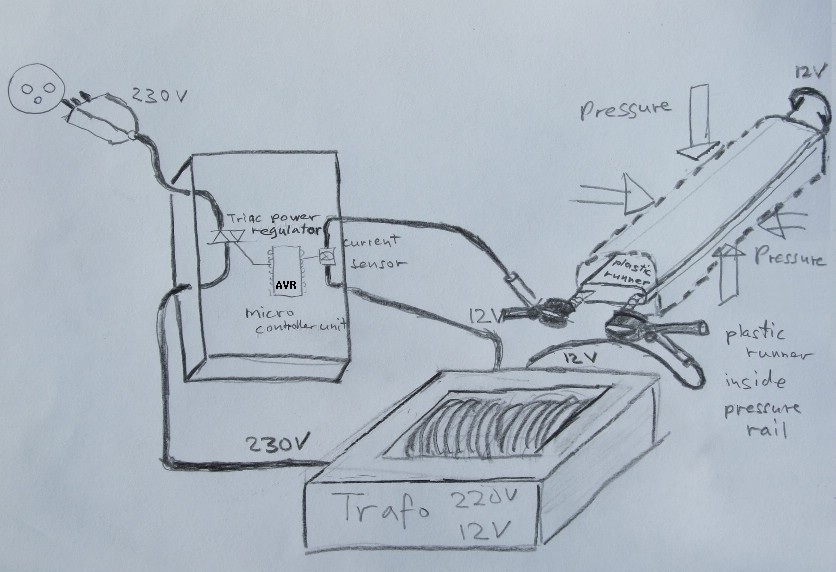

Welcome on Peter's Project Page
JoesTriac Project
The whole project began on a sunny, hot day in summer 2011. I went to visit my family where I also met my friend Jo. After a while, he asked me if I can help him with a new idea concerning his production of sledges.
Because the slopes often are icy in Switzerland, Jo planned to add steel angles to the synthetic sledge runners. In order to fix the steel angles into the synthetic runners correctly concerning all the hard and heavy requirements met on icy slopes, it is needed to heat and melt the materials together. Therefor a precisely controlled high ampere current flow has to be kept thru the iron steel angles for an exactly controlled time to heat them up, while the materials are pressed together strongly. So, develpment began and I still greatly enjoy.
Whereas Jo began his work on the development of the pressure rail, I started planning the electronic part. I based the electronic solution on a triac controller using an AVR mcu. It allows setting of amperes (0 - 120 amps) measured on 12V AC (secondary side of transformer), controlled via a triac on the primary side of the transformer (220V), and also allows setting the duration of the current flow. After heating up is finished, still under pressure, cooling down takes place for a certain amount of time. At the end of cooldown, an acoustic buzzer-alarm will announce the end of process to the user. The project now (as per 23. 12. 2011) is in a first phase used under production. All is running so far ok and without any problem.

- Pictures of working place
- Design details and explanations
- Circuit diagrams and calibration explanations
- Pictures of the final equipment
- Pictures of sledge runner production
(attention: on freeoda.com it often needs some "try again", when loading a page
... but anyhow: a great thanks to
freeoda.com
for their free
web host ! )
Some of these pages are still under construction as per 25. Oct. 2015. More content will be added within the next few days. Please be patient and visit my Project Page again. Any feedback is welcomed on peters(at)fantasymail.de and I will enjoy answer all your question.
get the source code on GitHub : ipupiara/JoesTriac
License
GNU License
Author
Contact
peters(at)fantasymail.de
Download
You can download this project in either zip or tar formats.
You can also clone the project with Git by running:
$ git clone git://github.com/ipupiara/JoesTriac